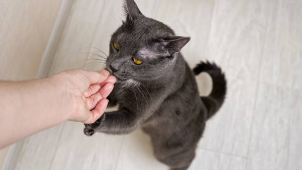
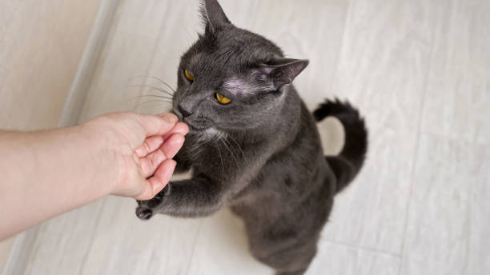

Train Your Cat
Train Your Cat Cats are smarter than many people think and they have a great memory. Experts state that cats have both long-term and short-term memory so they are trainable. At the same time, it also means they know what they can get away with repeatedly. Pets, like people, react well to positive reinforcement, so cats will remember when they get something they enjoy. Most cats like attention, food, toys, or all three. Choose a motivator that you can use to entice your cat to do what you want it to do and to provide it with a form of positive reinforcement. If possible, reward your cat with this special item only when training for this particular behavior. By reserving the desirable item for training, it will add to the value of the reward and make it that much more enticing to your cat. If you are struggling to find an item that your cat is motivated by, consider things like tuna, canned spray cheese, shrimp, and catnip toys.
 
